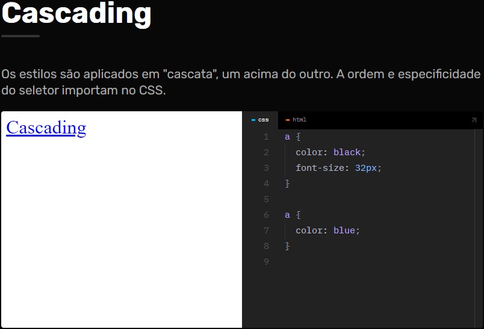

Início.
CSS Básico.
Link:
< link rel="stylesheet" href="/style.css" />
- link
-
Cria uma relação entre um documento HTML e um arquivo de estilo CSS.
- rel
-
Define o tipo de arquivo (stylesheet para CSS). É possível linkar outros também como favicons.
- href
-
Define o caminho do arquivo.
CSS Anatomia:
Seletor
- Seleciona o elemento(s) que deve ser estilizado.
Bloco CSS
- Engloba as propriedades {} que serão aplicadas ao seletor.
Propriedade
- Define o que será alterado.
Valor
- Define o valor do novo estilo.
Cascading.
Os estilos são aplicados em "cascata", um acima do outro. A ordem e especificidade do seletor importam no CSS. Isso quer dizer que a cor que eu defini antes para um seletor ,por exemplo, de black e usando esse mesmo seletor com color blue, o mesmo ficará azul.
